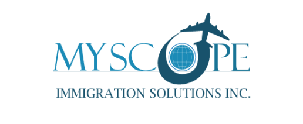
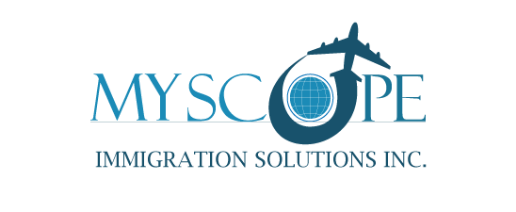
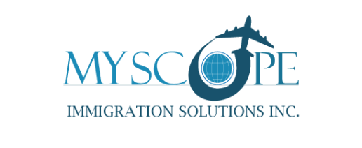
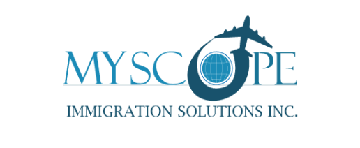

TEMPORARY RESIDENCE

STUDENT VISA
Canada is famous for its high quality education and living standards. Many students choose to come to Canadian universities and educational institutions to take advantage of our world-class educational system.
A study permit is a legal document that allows an international student to study in Canada for a specific time period. Excluding some exceptions, most international students need a study permit to study in Canada, if the length of your program of study is more than 6 months. A Temporary Resident Visa (TRV) might also be required to enter Canada, but this depends on your country or residence or citizenship.
While on a study permit in Canada, it is important that you understand the conditions of your study permit. Failure to satisfy your study permit conditions can result in losing your status as a student and may force you to exit Canada.
REQUIREMENTS FOR STUDY PERMIT IN CANADA
To qualify for a study permit, you will have to meet the following requirements according to Immigration Canada:
*Obtain and provide your letter of acceptance from the designated learning institution (DLI) that you have been accepted into.
*Convince the immigration officer that you will in fact exit Canada upon the conclusion of your studies
*Valid passport – ensuring that it is valid throughout the duration of your stay
*Evidence the fact that you are financially capable of paying your tuition fees, covering your room and board expenses, as well as your day to day living expenses for the entirety of your stay
*Not be inadmissible under criminality grounds pursuant to IRCC provisions
*Not pose a risk to the safety and security of Canada or its civilians
*Not be inadmissible under medical grounds (you may have to undergo a medical examination)
WORKING WHILE STUDYING IN CANADA:
So long as students maintain a valid study permit and are enrolled as full-time students, they are eligible to work part-time, for up to 20 hours per week during the semester and on a full-time basis during scheduled breaks (e.g. summer break, winter holiday). A valid Social Insurance Number (SIN) is also required.
Upon completion of their studies, students may also be eligible to apply for a Post-Graduate Work Permit, which allows students to work in Canada for up to 3 years, depending on the length of the study program.
Note: once your study permit has expired and/or you are no longer attending full-time classes, you can no longer continue working.
STUDYING IN CANADA WITHOUT A STUDY PERMIT
It is allowed, but only in specific situations, as under:
Program Length: The length of the study program must be 6 months or less
Minor Children:
Parents with Minor Children
Parents(s) with valid legal status to either work or study inside Canada are eligible to enroll their minor children in pre-school, primary school or secondary school without obtaining a study permit.
Refugees and Refugee Claimants
If you are a minor child and are inside Canada as a refugee or refugee claimant, you are exempt from obtaining a study permit inside Canada. This exception also applies if you are a minor child and your parents are inside Canada as refugees or refugee claimants.